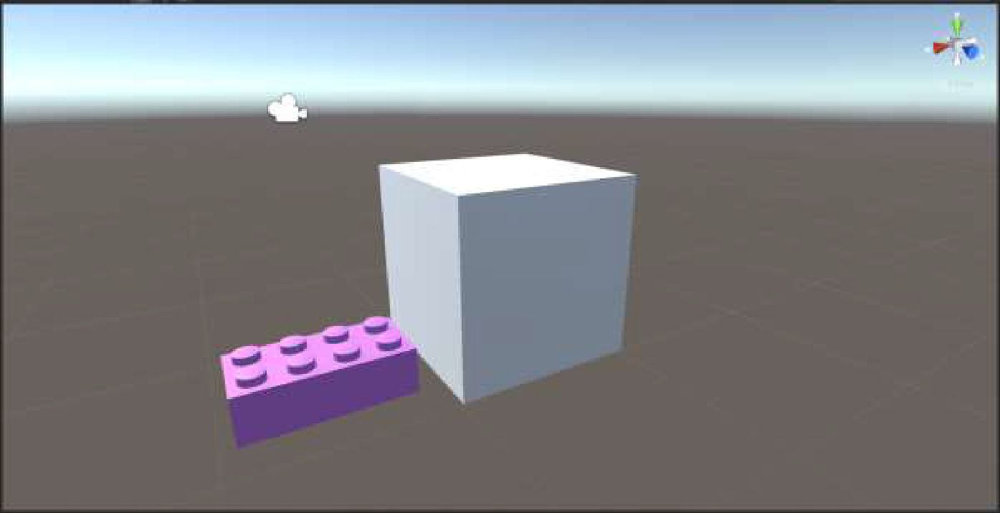
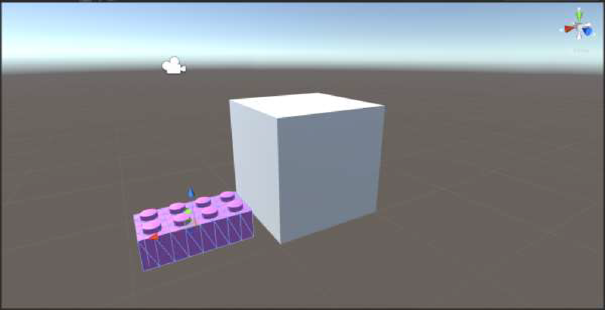
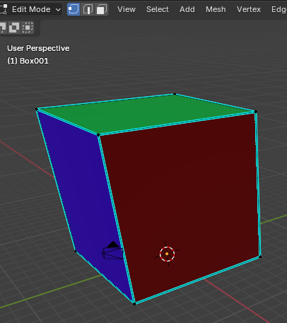
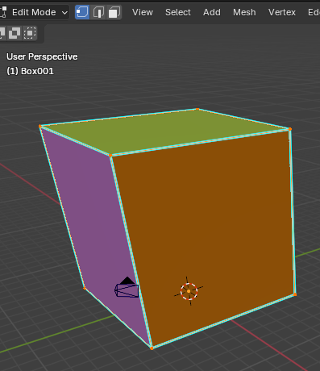
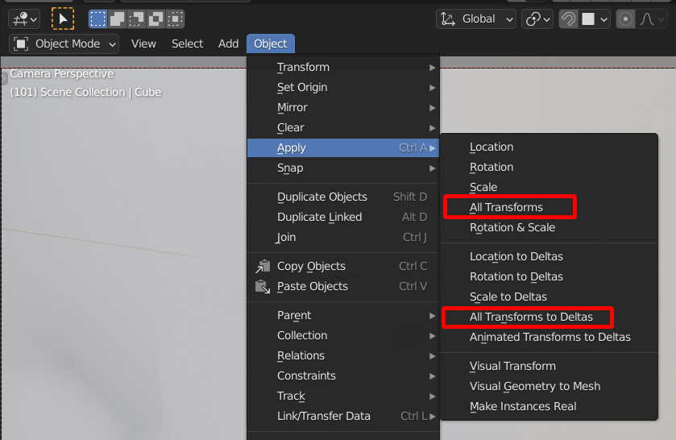
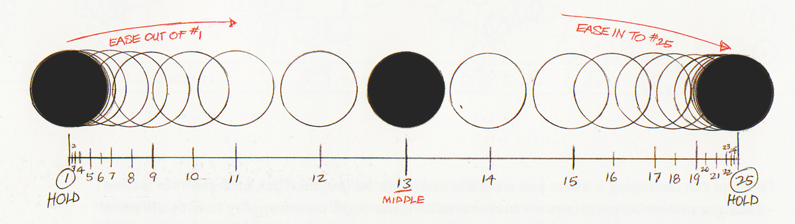

Origins, Pivots and Transforms
Three similar-looking concepts
Object origin ≠ temporary pivot ≠ Scene handle
- Blender Object Origin: persistent local transform origin; rotating the object turns around this point.
- Blender Transform Pivot Point: temporary editing control (Median Point, 3D Cursor, etc.); changing this does not relocate the Object Origin.
- Unity Transform: position and rotation origin for the GameObject. The Scene view Pivot/Center toggle only changes where the editing handle appears.
Set a joint origin in Blender
Shoulder or hip: Origin to 3D Cursor
In Edit Mode, select the vertices defining the joint centre; use Shift+S → Cursor to Selected. Return to Object Mode and choose Object → Set Origin → Origin to 3D Cursor. Test rotation before parenting.
Origin to Geometry is useful for centred objects, but it is usually wrong for a shoulder or hip joint.

Why an origin error matters in Unity
Rotation follows the imported Transform
A door should rotate around its hinge; an arm should rotate at its shoulder. A misplaced origin makes the object orbit unexpectedly. Unity can alternatively use an empty parent GameObject placed at the desired pivot.


Preparing Models for Animation
Object Mode and Edit Mode
Geometry changes and object transforms are different
Editing vertices in Blender Edit Mode changes mesh geometry relative to its object origin. Moving, rotating or scaling in Object Mode changes the object transform. Choose deliberately: neither is a universal axis-conversion fix.


Apply transforms selectively
Ctrl+A: Rotation and Scale
For a static mesh, applying rotation or scale can simplify export. For an animated hierarchy, applying Location/Rotation/Scale after parenting or keyframing can change the result. Prepare and verify transforms before animation; save a backup first.

Clean model checklist
Before creating Actions
- Use descriptive object names: Body, Hips, LeftArm, RightArm, LeftLeg, RightLeg, Head, UPctrl.
- Check each joint origin and parent.
- Ensure a sensible rest pose and physical scale.
- Lock unused axes for the simple controller as an editing safeguard; Blender channel locks do not become Unity runtime constraints.
- Keep reference geometry outside the export selection.

Blender Animation: Actions, Dope Sheet and Curves
Create a short run cycle
Block a repeatable pose sequence
Use a 30-frame example to teach opposing arm/leg poses and vertical bounce. The tutorial describes high/low bounce positions, staggered limb rotations and copying keys in the Dope Sheet.
For a seamless loop, ensure the first and last sampled poses match. Avoid duplicating a boundary pose in a way that produces an unwanted one-frame hold.

Dope Sheet, Graph Editor and interpolation
Different tools for different questions
- Dope Sheet: when do poses happen? Select, move, duplicate and align keys.
- Graph Editor: how do animated values change between keys? Adjust F-Curves and handles.
- Interpolation: Constant, Linear and Bezier describe between-key behaviour.
- Handle type: Vector is a handle type, not the same thing as Constant interpolation.
Use Blender’s current Key menu and Graph Editor controls; shortcuts may depend on Blender version and keymap.

Separate run and stand animations
Actions, not just extra frames
The tutorial adds a standing pose after the run-cycle frames. For a clean Unity workflow, save Run and Idle as distinct Blender Actions or explicitly define separate clip ranges in Unity. Do not assume every Action automatically exports as a separate clip.
Screenshot placeholder: Blender Action selector showing Run and Idle. Capture from the Blender/Unity versions used for teaching.